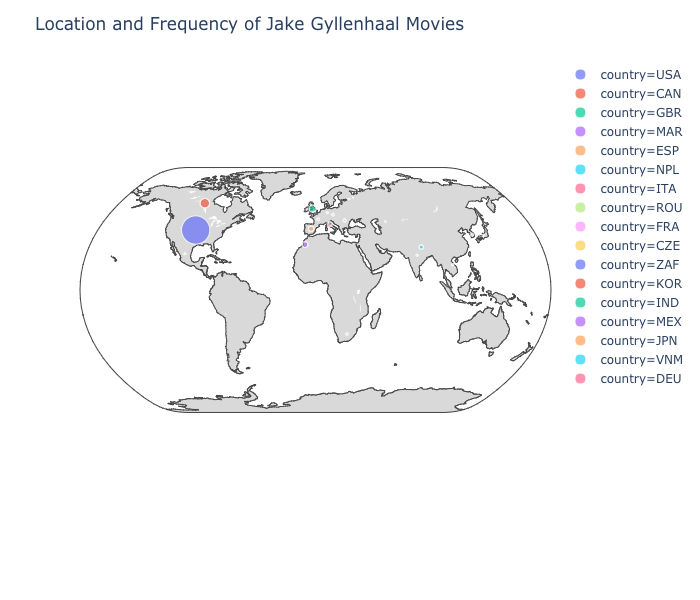

chart here
|
good radar here
|
bad radar here
|
"The Day After Tomorrow," one of Gyllenhaal's
most poorly received movies, outperformed two of his best movies in box office earnings.
Despite the fact that "Nightcrawler" received 164 awards to "The Day After Tomorrow"'s 18,
the latter movie earned 8 times more on opening day, and 50 times more over the course of its
time in theaters. This shows that the media-consuming public is not always driven by "high tastes."
